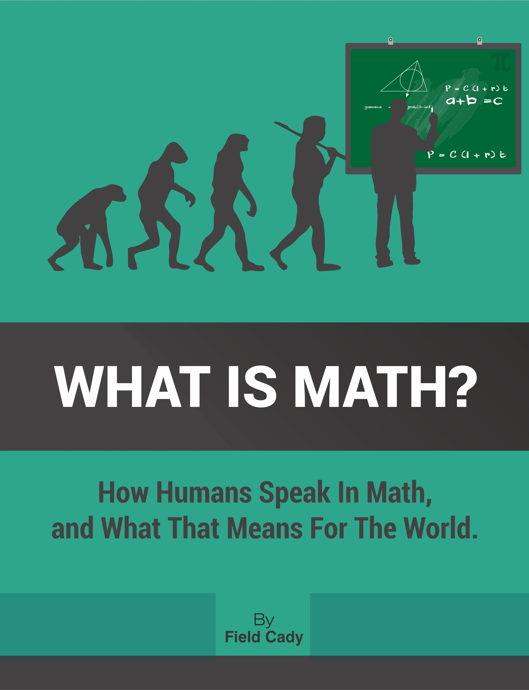

by Field Cady
What is Math? is an exploration of mathematics not just as a tool, but as a deeply human pursuit. Weaving together cognitive science, linguistics, and rich historical context, this book offers a novel perspective on how we understand and interact with quantitative concepts.
I self-published this book to make it accessible to everyone. This website is a place-holder to let you freely access the book and explore its themes.
"I stayed up until like 3am reading this book - it's fantastic! As a teacher I see a lot of the connections that the author makes, and have long considered mathematics to be a language--obviously. However, he took it to a whole different level, and really re-imagined the whole subject. It's also surprisingly easy to read - the concepts are presented in an accessible way, and the writing is engaging and funny. I highly recommend it!"
"This book does an excellent job of tying together different branches of math, philosophy, human language, and the brain's operations in layman terms. It gives more than enough bookmark'able areas to research later but is written in a clear, elegant, and sometimes joking way... The author does an excellent job of questioning some of the formalism movements of mathematics that are not naturally intuitive to the human brain."
"This book deserves greater recognition. Field Cady has successfully approached how we think, from a revolutionary new angle. Learn about yourself, your thought process and your use of self-referential language in this excellent book on maths and philosophy. Don't be discouraged by fear of arithmetic, Field Cady expertly explains complex ideas in simple terms, drawing on interesting stories, anecdotes and historical references in the process."